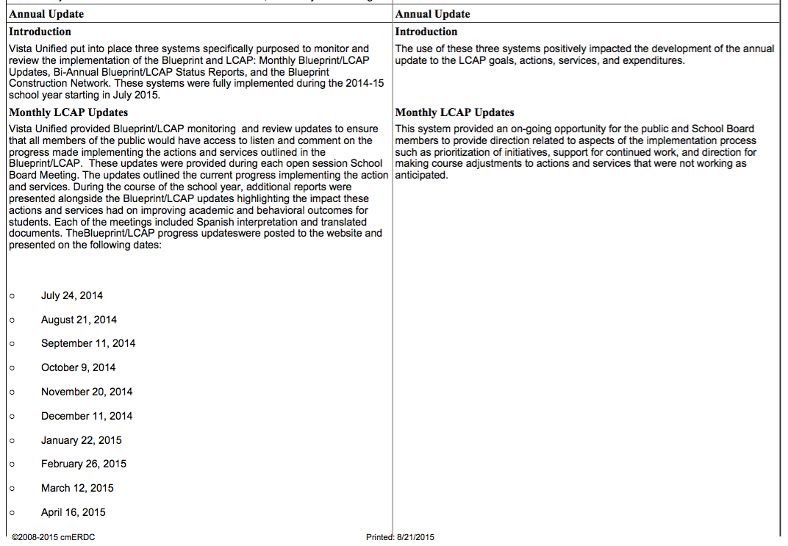
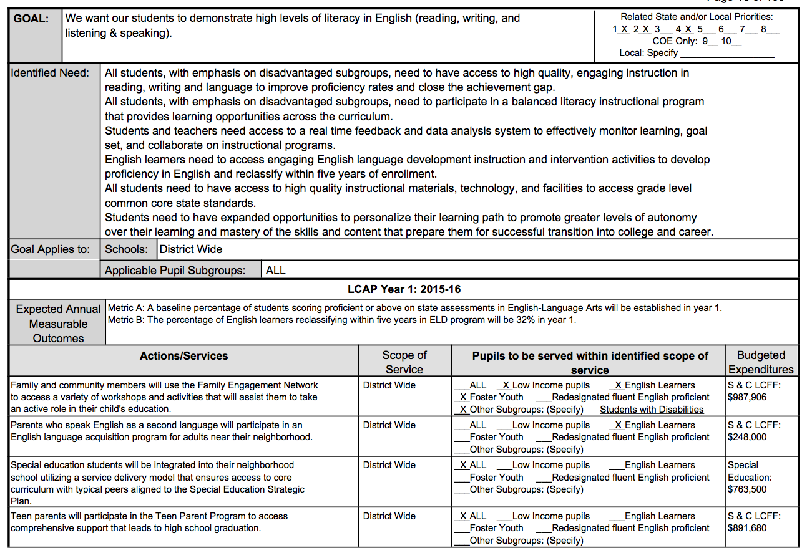

<div class='featurePanel scroll1 tqTest' id='UsefulPlan' title='LCAP with real Planning'>


<div class='proposition'>
	2) Generate the Report
	</div>
<div class='explanationContainer narrowWindowDeleteIdClass' style='' title='CLICK TO START/STOP SLIDE SHOW ANIMATION'>

	
	
	
	
	
	


</div>
<div class='conclusion'>
Completely Automatic Report Creation
</div>

	<div class='featureLogo'><!logo!></div>
</div>